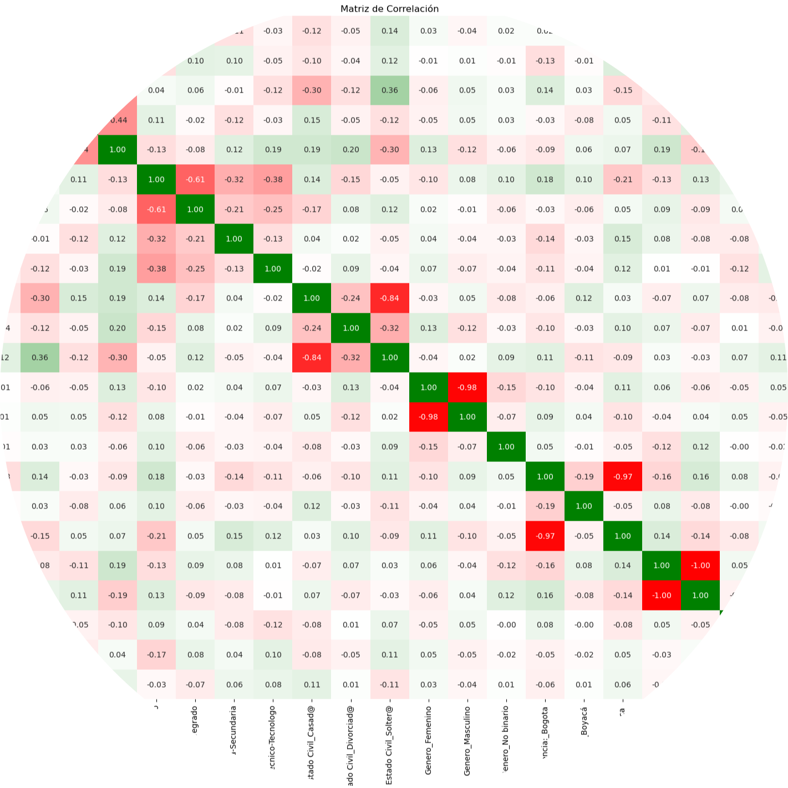

Portfolio
Análisis de viabilidad para incorporar vehículos eléctricos al
servicio de taxis en Nueva York:
Análisis de datos y desarollo de modelo ML forecasting al sector de transporte público de autos
para invertir con taxis eléctricos...
▶️Repositorio

Sistema Recomendador de Películas:
Desarrollo de modelo de machine learning que
recomienda películas y series a usuarios de plataformas de streaming como netflix,
amazon entre otros...
▶️Repositorio

Análisis al Mercado Bursatíl compañias index SP500:
Análisis de datos a la situación del mercado bursátil de los últimos 20 años
para seleccionar con modelo ML compañias potencialmente rentables...
▶️Repositorio
Análisis de datos a resultados de pruebas universitarias en Colombia:
Desarrollo de un modelo ML que determine las variables más influyentes en el desempeño
de los estudiantes universitarios al momento de realizar las pruebas estatales Saber Pro...(en desarollo)
▶️Repositorio
Web Scraping Digital Green Skills Jobs:
Extracción, análisis y disponibilización de los datos referentes a los trabajos postulados en la web
que requieran habilidades digitales verdes ... (en desarollo)
▶️Repositorio